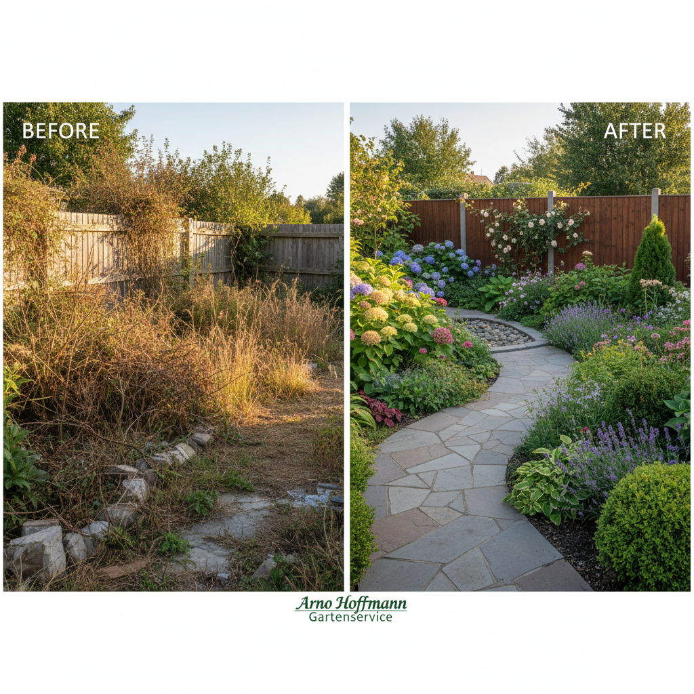
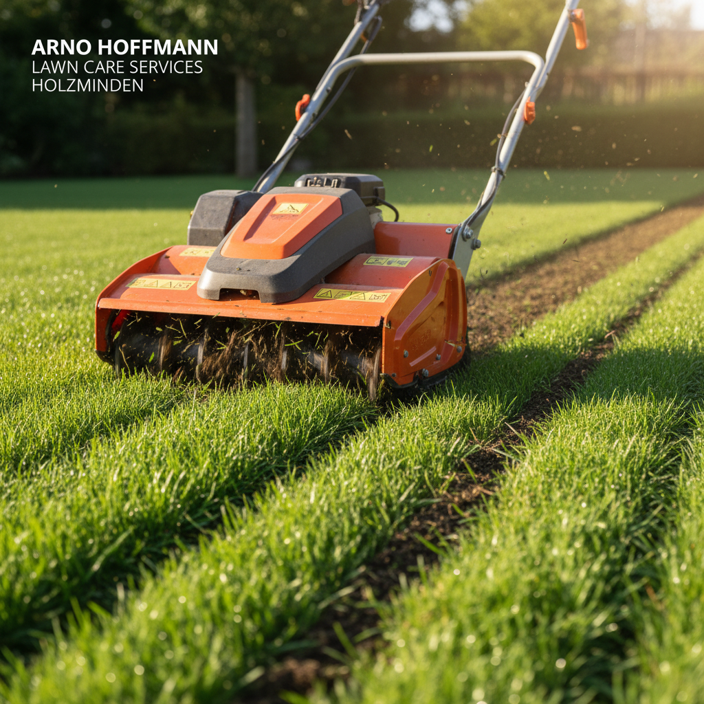
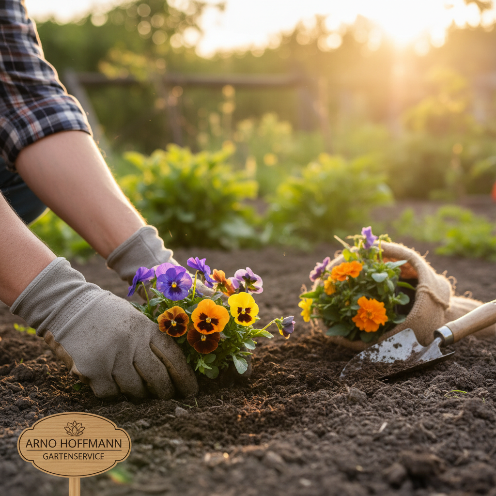
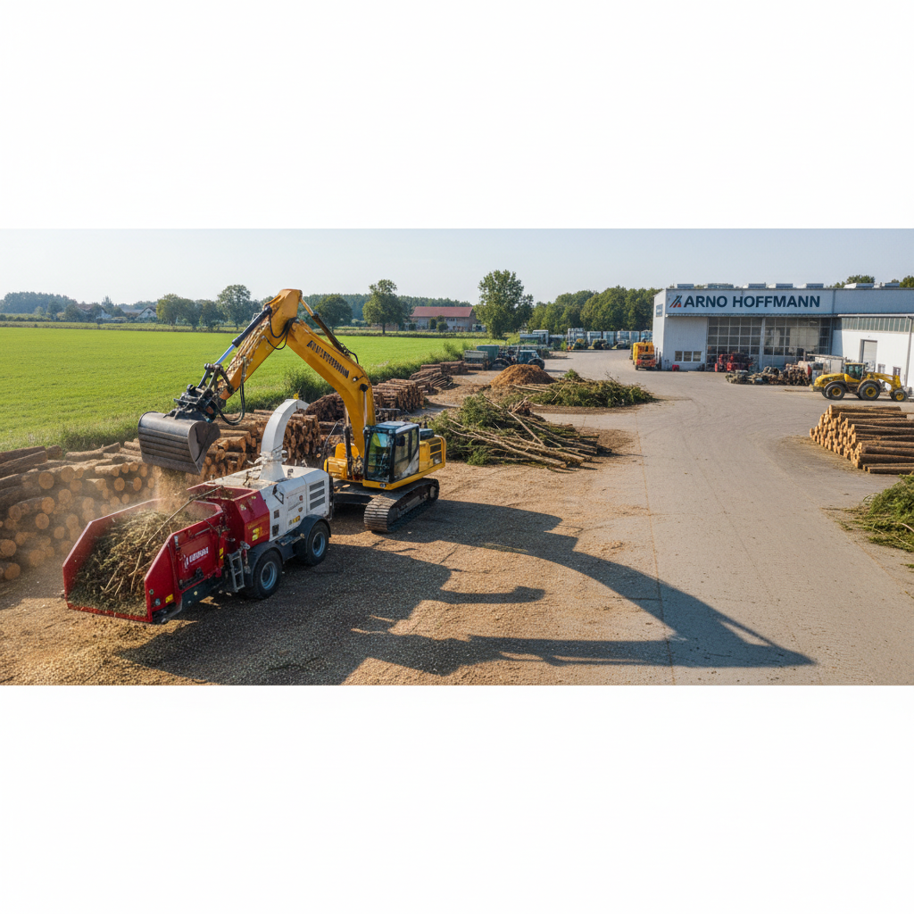
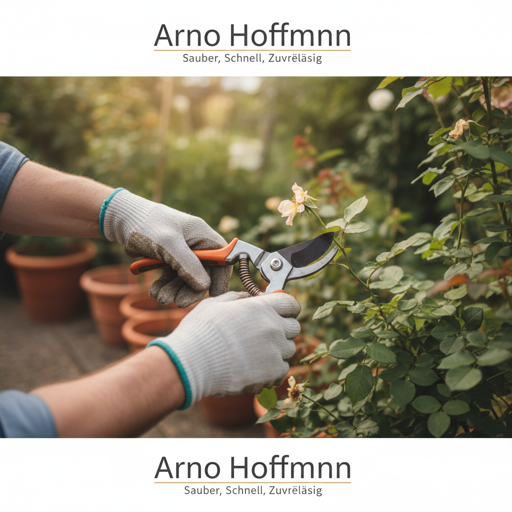

Meisterwerke im Grünen: Unsere Projekte
Bilder sagen mehr als tausend Worte. Tauchen Sie ein in unsere Galerie und entdecken Sie die Vielfalt und Qualität unserer abgeschlossenen Projekte in Holzminden und Umgebung.
Ihre Inspiration beginnt hier
Entdecken Sie eine Auswahl unserer Arbeiten. Jedes Bild zeugt von unserer Hingabe zu Perfektion und der Verwandlung von Außenbereichen. Klicken Sie auf ein Bild, um es zu vergrößern.

Garten-Transformation
Sichere Baumfällung

Professionelle Rasenpflege

Liebevolle Neuanlagen

Moderner Maschinenpark

Präzision im Detail
Haben unsere Projekte Sie inspiriert?
Lassen Sie uns gemeinsam Ihr eigenes Gartenprojekt Wirklichkeit werden lassen. Wir freuen uns auf Ihre Ideen.
Ihr Projekt starten